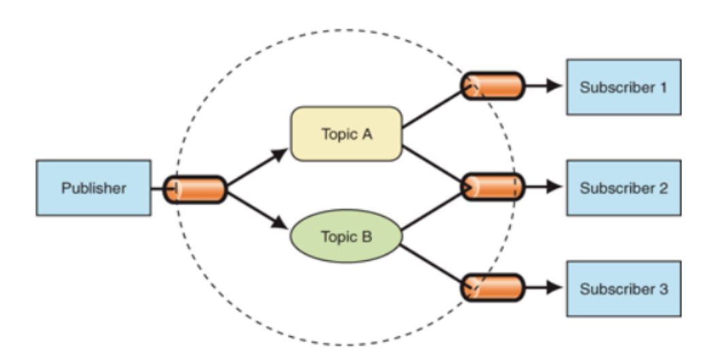

Реализуйте функцию eventEmitter, которая представляет собой простую реализацию паттерна "Издатель-Подписчик" (Publisher-Subscriber). Функция должна иметь методы subscribe, unsubscribe и publish. Подписчики должны быть оповещены о каждом событии, которое было опубликовано.
–ü–æ–¥—Ä–æ–±–Ω–µ–µ о –ø–∞—Ç—Ç–µ—Ä–Ω–µ –ø–æ–ø—Ä–æ–±—É–π—Ç–µ –Ω–∞–π—Ç–∏ —Å–∞–º–æ—Å—Ç–æ—è—Ç–µ–ª—å–Ω–æ (—É–º–µ—Ç—å –≥—É–≥–ª–∏—Ç—å —Ö–æ—Ä–æ—à–∏–π –Ω–∞–≤—ã–∫üòâ)